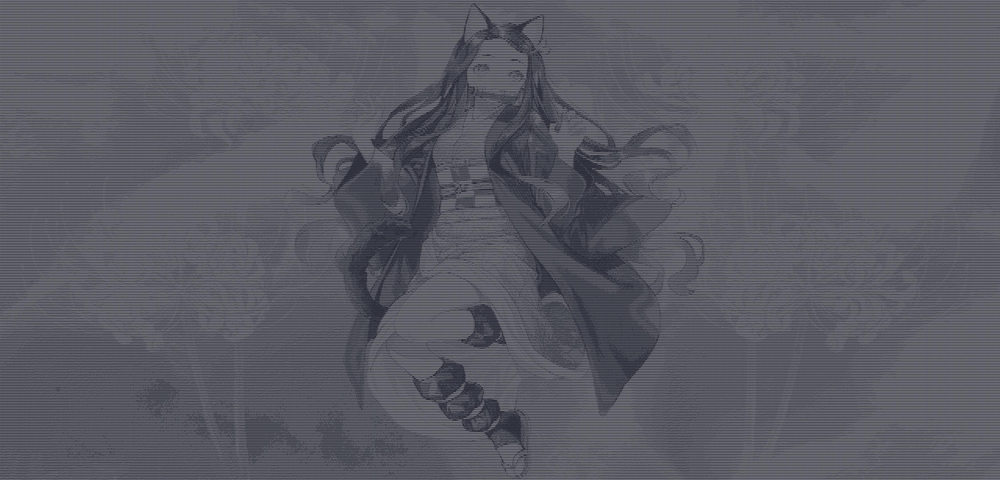
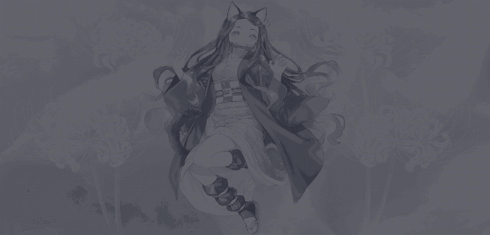

Rust Showcase
I started learning Rust to dive into game development using the ECS (Entity Component System) pattern, a data driven approach which naturally presents itself when using Rust. It has been an absolute joy and pushed me through a journey across many Rust projects.
All my personal Rust projects are open source on my
githubI also have professional industry experience with Rust on satellite embedded software
Mango Village
Example clip showcasing some game mechanics implemented.
Looks simple, but there's a lot going on in the background here!
- Multiplayer with a client/server architecture, using durian, my own library, as the networking layer. All the movement and physics is being calculated on the server and sent to the client for rendering.
- Physics system, powered by bevy_rapier, an impulse based physics simulator. The player is modeled as a character controller, with a custom collision system written by me. I have also looked into XBPD, but the current resources are still immature.
- Implemented my own Pan-orbit camera system with 3d controls, with a locked follow camera mode on the player
- Meshes are generated as .gltf/.glb files from Blender models
- All built on top of the Bevy game engine under an Entity Component System (ECS) architecture.
media-to-ascii Examples
Ascii videos!?!???!?
 

And high quality ascii images of course
Blender donut
Rendered in Blender 3.6.1 LTS, following the classic
Blender Donut TutorialUsed this to learn some 3d modeling when working on